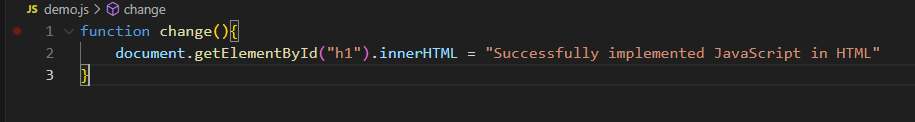
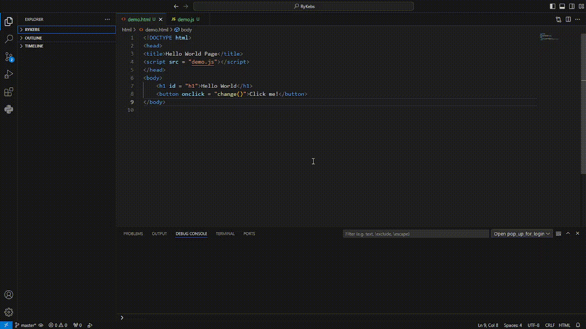
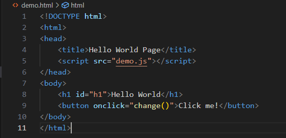

Lessons
JavaScript
Para sa araling ito, gagawa tayo ng isang bagong HTML na dokumento
upang makagawa ng isang interactive na button sa tulong ng JavaScript.
Gumawa ng bagong folder at lumikha ng mga bagong file para sa HTML at JavaScript.
Buksan ang HTML at tignan ang mga linya sa baba:

Buksan naman ang JavaScript file at ilagay ang halimbawa sa baba:
Panghuli, buksan ang HTML at tignan ang magiging resulta pagkatapos pindutin ang button.
Dapat magresulta ito ng katulad ng halimbawa sa baba:

_____________________________________________________________________________________________________________
For this lesson, we are going to create a new HTML document to make an interactive button with the help
of JavaScript.
Create a new folder and create new files for HTML and JavaScript respectively.
Open the HTML document and look at the following code:

Then open the JavaScript file and put in the following code:
Lastly, open the HTML document and see if pressing the button would turn the text into this: